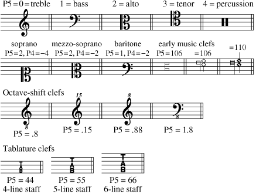
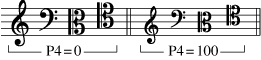

Code 3 -- Clefs -- parameter structure |
P1 code number (3)
P2 staff number
P3 horizontal position
P4 vertical position
P5 clef type
P6 horizontal size
P7 vertical size
. . . .
P10 pixel thickness
. . . .
P15 offset from P3 position
P25
P26
To input a clef, type the clef name or click on the New Item button and then on one of the clef buttons. The clef will appear on the highest staff currently on the screen. If there is no staff on the screen, the clef will appear in a position relative to staff 1. The clef name may be followed by a series of numbers (n2, n3... ) which will further specify its characteristics by setting P2, P3, etc.
TREB = treble clef.
BASS = bass clef.
ALTO = alto clef.
TEN = tenor clef.
PER = percussion clef.
When the clef appears it is directly in edit mode and may be moved, etc. with the various edit commands. Hitting <enter> or X leaves edit mode.
Jump to Letter Edit Commands
Jump to Function Key Setup
P5 values for various clefs.

All the clefs may also be accessed through the Code 9 symbol library.
For mini-clefs set P4 to 100.

P7 vertical size factor.
If P7 is left at zero the horizontal and vertical sizes are both controlled
by P6. Normally, P6 and P7 are rarely altered.
P10 may be used to reduce the basic line thickness in
PostScript printing.
If your printer's resolution is 600 DPI, the basic line thickness would
normally be 4 pixels. P10 = -1 would reduce this to 3 pixels; P10 = -2
would reduce this to 2 pixels. This feature may increase printed clarity
of clefs on very small staff sizes.
The effects of this parameter will NOT be visible on the computer display.
P15 offset from P3 position
Toolbar
buttons:
 = offset .5
to left
= offset .5
to left  = offset .5 to right
= offset .5 to right  = zero offset
= zero offset
P25 layer number.
See Color Control.
P26 color/gray value.
See Color Control.
_____________________________________________________________________
----- Shortcut Letter Commands while editing Clefs --------------------------
TRE
= treble clef
BAS = bass clef
ALT = alto clef
TEN = tenor clef
TDO = treble clef with '8' below.
(DO=Down Octave) (P5 = .8)
TUO = treble clef with '8' above.
(UO=Up Octave) (P5 = .88)
TUQ = treble clef with '15' above.
(up 2 octaves, quindicesima) (P5 = .15)
BDO = bass clef with '8' below. (P5 = 1.8)
PER = percussion clef
MIN = make mini clef (P4 +100)
TAB = tablature clef (6 line staff)
TB4 = tablature clef (4 line staff)
TB5 = tablature clef (5 line staff)
>>> Offsets
OFM = offset minus, moves clef .5 step to left. (P15)
OFP = offset plus, moves clef .5 step to right.
NOF = no offset of clef -- P15 = 0.
| F1 Help |
F2 Back to Previous Item |
F3 Forward to Next Item |
F4 Back to Previous Item, Same Code # |
F5 Forward to Next Item, Same Code # |
F6 . . . |
| F7 . . . |
F8 . . . |
F9 Exit from Edit Mode ( X ) |
F10 . . . |
F11 Delete, Move to Previous, Same Code # |
F12 Delete, Move to Next, Same Code # |